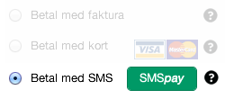
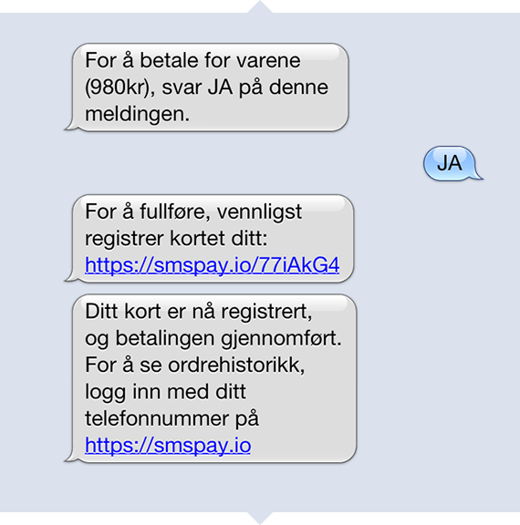
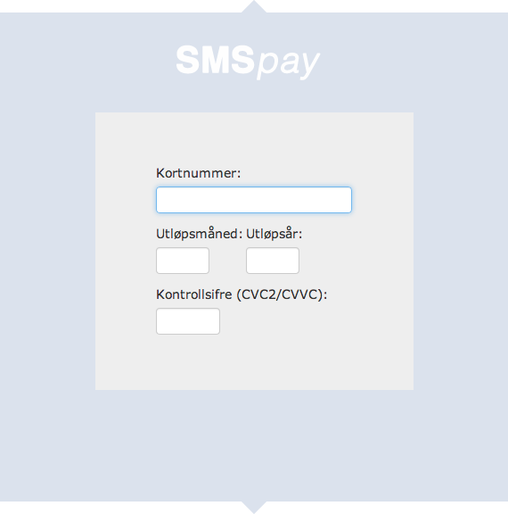
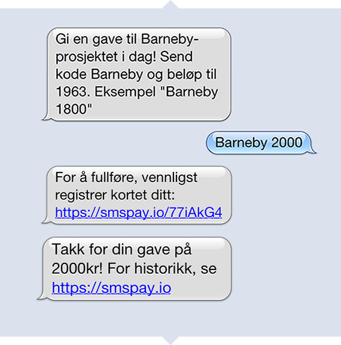
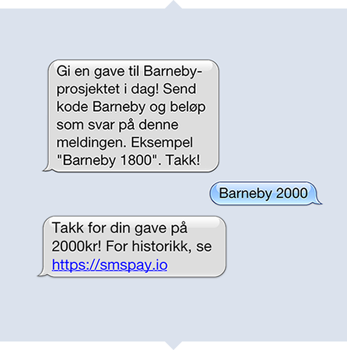

Den aller første gangen du benytter en tjeneste som tar betalt via SMSpay, vil du få link på SMS til å fylle inn kortnummer. Prosessen er den samme om du shopper på nett eller svarer på et SMS-tilbud.

Når du klikker på linken for å registre ditt kort, vil du se et enkelt skjema for å fylle inn kortdata. Som bekreftelse på at du har gjort det riktig, vil du motta en SMS.
Når du først har registrert kortet ditt på SMSpay, vil vi kjenne igjen telefonnummeret ditt når du senere er ute og shopper. Når du ser SMSpay-ikonet i en netthandel, vet du at du kan betale bare ved å svare på en SMS. Så enkelt!
Den aller første gangen bruker SMSpay for å gi en gave, vil du få link på SMS til å fylle inn kortnummer. Dersom du har benyttet SMSpay til å shoppe på nett tidligere, er du allerede registrert.

Når du klikker på linken for å registre ditt kort, vil du se et enkelt skjema for å fylle inn kortdata. Som bekreftelse på at du har gjort det riktig, vil du motta en SMS (3kr).
Noen organisasjoner lar deg gi din gave bare ved å svare på en SMS. Svar med kodeord og beløp, så er din gave sendt!
Når du først har registrert kortet ditt på SMSpay, vil vi kjenne igjen telefonnummeret ditt neste gang du vil gi en gave. Din gave er bare en SMS unna! Du kan også benytte SMSpay til å gi et fast beløp hver måned.